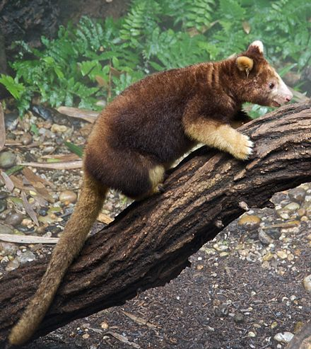

This wikipedia article is about the tree-kangaroo, a marsupial that inhabits the topical rainforests of New Guinea and Queensland. Like true kangaroos, these animals navigate on the ground by hopping, but they are also the only arboreal macropods, which means that they are the only marsupials in they're family to live in the trees.
 Radiohead Public Library
Radiohead Public Library